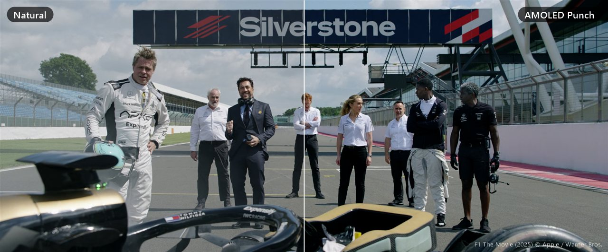

KevinB's Display Tuner
Give your ordinary LCD or IPS laptop screen an edge: tuning effects that bring it closer to the look of an OLED or AMOLED display. Richer color, deeper blacks, tuned automatically for your panel.
Portable single file • Windows 10 / 11, 64-bit • free and open source (MIT)

See the difference
Left half untouched, right half with a preset. Screenshots can't capture the live filter, so these are made with the app's exact color math, tuned for a typical narrow-gamut laptop panel.

What it does
Detects your screen
Reads the data every display reports about itself (EDID): maker, model, and its red, green and blue primaries.
Tunes the presets
Washed-out, narrow-gamut panels get more color. Wide-gamut panels get little. OLED screens skip black deepening.
Applies screen-wide
Works in every app: browsers, video players, streaming sites. Ctrl + Alt + F toggles it.
Changes nothing permanently
Exit the app and colors go straight back to normal. Settings live in a small file next to the exe.
How it works
Color matrix
Windows' Magnification API can apply a 5×5 color matrix to everything on screen. Display Tuner builds one matrix from your settings: saturation (mixing each channel with its luminance), contrast around mid-grey, a brightness offset, and warmth as per-channel gains that only ever reduce a channel, so nothing clips.
Black-level curve
Only the darkest ~20% of tones are pulled down, through the display's gamma ramp. Mid-tones and highlights are untouched, so dark scenes get deeper without the whole picture turning dim.
Auto-tuning
The panel's red, green and blue primaries form a triangle on the CIE color chart. Its area compared with sRGB says how much color the screen can show, and the presets adapt:
| Panel type | Color area vs sRGB | Extra color (OLED Movie) | Black level |
|---|---|---|---|
| Narrow-gamut IPS/TN (typical budget laptop, “45% NTSC”) | under 75% | +15% | 35% |
| Mid-gamut | 75–95% | +8% | 35% |
| sRGB panel | 95–120% | +4% | 35% |
| Wide-gamut (DCI-P3 and up) | over 120% | 0% | 35% |
| OLED | any | by gamut | off (already true black) |
Presets
OLED Movie
Richer color and deeper near-blacks with a touch more contrast. The everyday pick for films and series.
True Black
The strongest near-black deepening with a little more contrast, for the closest thing to OLED black on an LCD.
AMOLED Punch
True-black depth plus extra color, like a phone's AMOLED screen.
Dark Room
Deep blacks, slightly dimmer and a touch warm, for watching with the lights off.
Anime
Bright, saturated color with clean lines and light black deepening.
Sports
Crisp contrast and vivid greens with a cool, daylight tone.
Gaming
A bit more color and contrast without crushing shadow detail.
Noir
Black and white with deep blacks, for classic films.
Reading
Softer color and a warm white for long reading sessions.
OLED Vivid
Extra color pop and a slightly cool tone, for animation, nature and HDR-style trailers.
Cinema
Gentler color with a warm, film-like white.
Deep Black
The strongest black level, for dark scenes and night-time films.
Night
Warm and a little dimmer, easier on the eyes late at night.
Natural
No change: your screen exactly as it was.
Use it
1. Download DisplayTuner.exe and put it in any folder. 2. Run it and pick a preset. 3. Adjust the sliders if you like, then Save as default. 4. Turn on Start with Windows to have it every time.
Windows SmartScreen may warn about an unknown publisher because the app isn't code-signed. Choose More info → Run anyway, or build it yourself.
Build it yourself
It uses the C# compiler that's already part of Windows, so there's nothing to install:
git clone https://github.com/KevinLeve/DisplayTuner
cd DisplayTuner
powershell -ExecutionPolicy Bypass -File build.ps1Good to know
Screenshots look normal
The filter changes what the screen shows, not the image itself, so captures and recordings keep the original colors.
Protected video and games
Some DRM-protected players and exclusive-fullscreen games may bypass the filter.
Several monitors
The filter applies to every screen; presets are tuned for the main one.